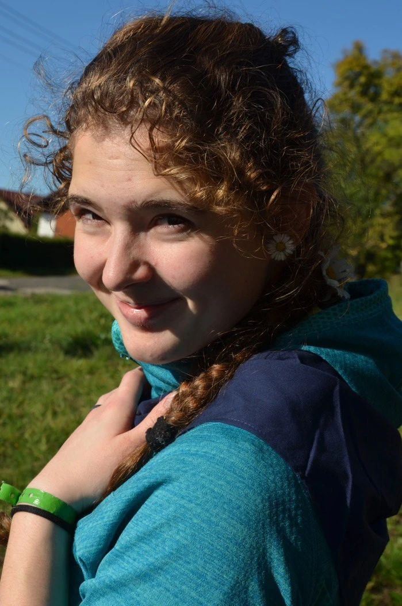

Společně se scházíme jednou týdně na základní škole Ještědské. Hrajeme spoustu her, střílíme z
luku, a rozvíjíme v oddílových dovednostech. Společně nás čeká spousta legrace a kamarádů.
Končíme u hlavního vchodu základní školy.
Výpravy
Jednou za měsíc se vydáváme společně na výpravu někam v libereckém kraji, někdy i na více dní.
Učíme se tam rozdělávat oheň, zažíváme společné dobrodružství ve skalách na vodě nebo si hrajeme
legrační hry na louce nebo v lese.
Tábory
Na začátku července máme společný čtrnáctidenní tábor. Bydlíme ve stanech tee-pee. Na táboře
zažíváme dobrodružství v originální příběhová etapová hra, dále netradiční hry a sporty, noční
hlídky, indiánská sauna i všichni společně se podílíme na chodu tábora.
Co o nás řekli?
Oddíl během čtyřiceti let své existence ovlivnil stovky dětí v Liberci a jeho okolí.
Náš oddíl vychoval schopné a zodpovědné dívky a muže.
Prošla jsem Orionem jako malá holka a teenager, pak jsem se s ním na pár let
rozloučila. Dnes jsem mezi rádci a snažím se,
aby byl oddíl pro všechny děti co nejlepším místem. Oddíl je pro mne a mou dceru
jako druhá rodina se vším co k tomu patří.
Škubánek
Oddíl mě vychoval k šetrnému chování k přírodě a lidem, respektu, neustálému učení a
zvládání neobvyklých situací. Naučil mě milovat, být vděčná a odpouštět. Oddíl mě
naučil
poznávat přírodu kolem sebe a rozumět jí.
Bětka
V druhé třídě jsem začal chodit do oddílu Orion se svým nejlepším kamarádem. Trávili
jsme spoustu víkendů hraním her a výletů do přírody. Strávil jsem v oddíle dalších
jedenáct let. Výlety do přírody, láska a úcta k ní a přátelé na celý život jsou to,
co
mi oddíl dal.
Zubr
V oddíle se mi líbila pestrost naší činnosti - nejen hry, ale i práce s mapami,
stezky
odvahy, uzlování. Jako rádce a později náčelník jsem se snažil o všestranný rozvoj
dětí
- pohyb, nové znalosti a umění. Díky oddílu jsem objevil spoustu krásných míst a
získal
mnoho kamarádů.
Skukum

Oddíl mi dal mnoho - skvělou partu lidí, kde můžu být sama sebou bylo to naprosto
jiné
oproti dětem ve škole. Naučil mě najít si místo, kde se cítím dobře. Překonávala
jsem
mnohokrát svou komfortní zónu na různorodých akcích a dnes si užiju i mokré boty
nebo
zimu.
Julča
Orion mi dal zážitky, na které ráda vzpomínám, některý z nich byly významnou lekcí,
jiné
byly pouze o radosti a smíchu. Je to takovej minisvět, kterej si v sobě skrz
vzpominky
pořád opatruju.
Bukí
Oddíl mi pomohl být tím, kým jsem teď. Díky němu jsem zažila své první tábor v
teepee,
naučila se vázat uzle, nebát se na nočních hlídkách. V oddíle jsem poznala první
lásku a
nabyla zodpovědnosti. Jsem vděčná, že v oddíle najde místo každý.
Aicha
Oddíl mi dal hodně. Vychoval mě a zanechal mnoho nezapomenutelných vzpomínek. V
dospívání jsem překonávala sebe sama výzvami, což mi pomohlo osobně se formovat a
posunout vpřed. Jako rádce a náčelník jsem se naučila efektivně řešit různé
komplikace.
Lachtan
Do oddílu jsem začal chodit až ve dvanácti letech. Naučil jsem se tady mnoho
dovedností,
jak se chovat k přírodě, ale také jak se chovat ve společnosti a vztazích. Oddíl je
pro
mě jako druhá rodina se vřelým přijetím a ochranou před nepřátelským světem.
Prokop
Vzpomínám na množství krásných zážitků ze dnů strávených v přírodě, na přátele, se
kterými se stále setkávám, i na lidské vlastnosti a hodnoty jako ochotu pomáhat,
samostatnost a vztah k přírodě, které jsem získal díky oddílu.
Klacek
Oddíl je pro mě jako druhá rodina. Můžeme si říct vše a nikdo nás nepoučuje, ale
vždy si
mě každý vyslechl. I když teď už nemám moc času, tak vždy ráda dorazím na nějakou
akci a
zavzpomínám co jsem zažila jako dítě.
Týna
V oddíle jsem prožila své dětství a zažila mnoho úžasných zážitků a potkala mnoho
lidí.
Díky oddílu jsem získala mnoho cenných zkušeností, které mě formovaly a pomohly mi
stát
se tím, kým jsem dnes. Oddíl pro mě znamená mnoho a jsem mu za všechno, co mi dal,
vděčná
Yetti
Chodím do oddílu ráda, protože je to skvělá parta lidí a máme možnost trávit čas v
přírodě. Oddíl mi dává příležitost prožívat nezapomenutelné chvíle s přáteli a
zároveň
se učit novým věcem. Jsem ráda, že tam mohu trávit svůj volný čas.
Zuzka
Každý tábor, na který jsem jel, jsem si fakt užil. I když jsem jezdil jen na tábory,
byl
jsem vždy přijat jako kamarád, se kterým se potkávají každý den. Oddíl pro mě
znamená
spoustu zábavy a nových zážitků, ale také přátelství a podporu od ostatních.
Sojka
I když jsem v oddílu nebyl moc dlouho, zažil jsem v něm spoustu zážitků. V oddílu
jsou
skvělí lidé . Mrzí mě, že už nemám čas chodit do oddílu. Pokud chcete poznat nové a
skvělé lidi a zažít spoustu zábavy, oddíl je skvělé místo, kde tohle všechno je :D.